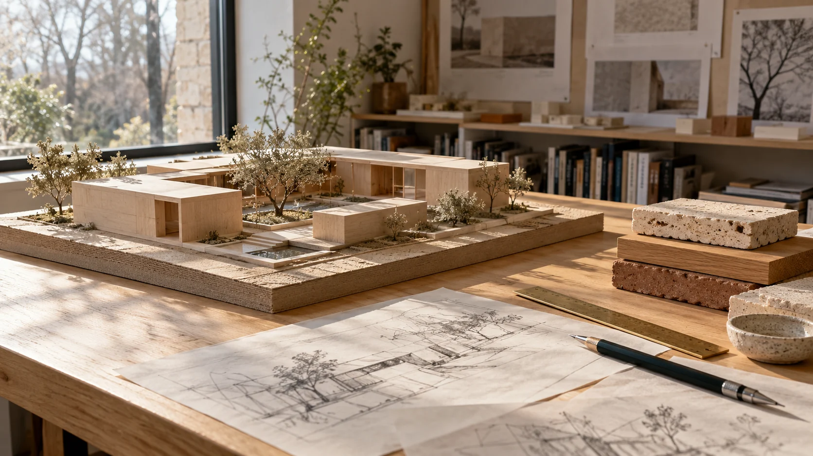
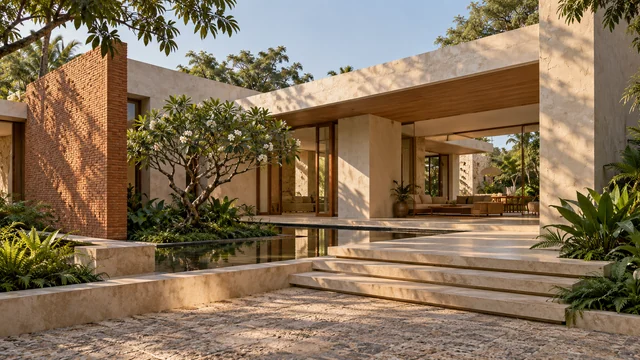

01
Residential / An inward-looking sanctuary
Architecture for the everyday extraordinary
Considered architecture.
Honest materials. A little more
room for life to happen.
A softer morning light. A familiar material, used in a new way. A threshold that brings the outside in. We explore the small, thoughtful decisions that make a space worth being in.
Meet the idea behind G3Different spaces.
The same thoughtful intent.
4 projects shown
Residential / An inward-looking sanctuary
Interiors / Room to slow down
Public spaces / A place to pause
Workspaces / A new chapter for an old shell
Ideas to build on. These are original design concepts, visualised with AI.
03 / Inside the studio
A space is never just a space.
It’s the life that happens within it.
G3 is an exploration of architecture at a human scale. Of buildings that listen to their surroundings, materials that get better with time, and rooms that leave room for you.
From the first sketch to the smallest detail, the question stays the same: how can this make everyday life a little better?
How we think
A simple starting point.
A different way of seeing.
Let daylight lead the way. Deep reveals, open courtyards and carefully placed windows turn changing light into part of the architecture.
Orientation / Openings / AtmosphereWood should feel like wood. Brick should tell its story. We pair tactile, familiar materials with quiet detailing, leaving their character on show.
Texture / Craft / CharacterBring the landscape into the conversation. A shaded bench, a framed tree or a small outdoor room can change how a place is experienced.
Landscape / Connection / Belonging
What would your space make possible?
A few ideas. A clear starting point.